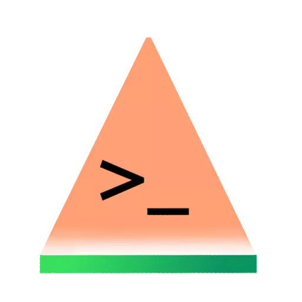

Suika2 – 11.10

Project lead and founder, lead programmer
ktabata 'K'
Hi, I'm a Japanese programmer. You can call me 'K' if you'd
like. I've started this project because I like
cross-platform programming. I hope that through the
development of Suika2 we can contribute to your visual novel
creation.

documentation and advisor
Kyou
Hey, I'm Kyou, the website and documentation maintainer
for the Suika2 Project. I love language, writing, and
reading. When I'm not studying or working on Suika2
related stuff, I'm writing for myself.
Video, Obfuscation, and Advisor
Aitsuki
Hello! I'm Aitsuki, nice to meet you. If you have any
problems, please don't hesitate to let me know and I will
try my best to assist you!
Oh, by the way I'm very friendly!
Graphic Design
Max
Hello! I'm the interface designer for Suika2. I've been
with the team since July 2022 and I've done a lot of work
since then, but even with all this progress, there's still
a lot of work to do to make Suika2 the perfect engine for
everyone!
Code Review, Advisor
Minirop
'Born to code!' – Minirop, 2022

Graphic Design
Matsuno-san

Graphic Design